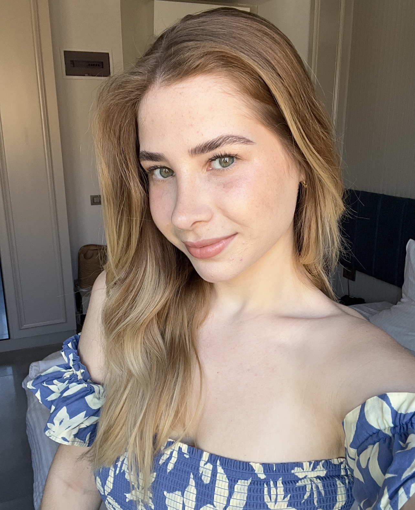

Hello you!
My name is Amanda Theisen

I'm a junior web developer passionate about solving problems and crafting meaningful digital experiences. I recently completed an intensive 12-week full-time web development bootcamp, where I fully immersed myself in learning and building practical projects—check them out here on my portfolio! I have a strong foundation in HTML, CSS, JavaScript, and Python, and I've worked on projects ranging from intuitive user interfaces to interactive features. I’m always eager to expand my skills by exploring new technologies and tools, like React, Node.js, and APIs, to enhance my capabilities. Having lived in London for over four years, I’ve honed my adaptability and a love for continuous learning. I’m excited to bring my dedication and enthusiasm to a team where I can grow as a developer and contribute to impactful projects.